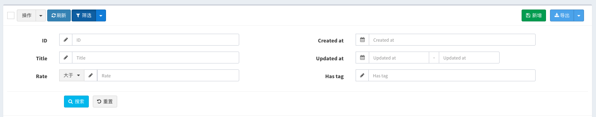
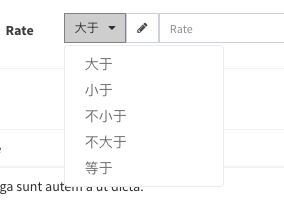

model-grid提供了一系列的方法实现表格数据的查询过滤：
$grid->filter(function($filter){
// 去掉默认的id过滤器
$filter->disableIdFilter();
// 在这里添加字段过滤器
$filter->like('name', 'name');
...
});
v1.5.8版本对过滤查询做了下面的调整和更新
v1.5.18版本及以上支持
对过滤查询面板的样式做了调整，从原来的弹出modal改为嵌入表格头部，通过点击筛选按钮展开显示，默认是不展开的，用下面的方式可以让它默认展开：
// 在`$grid`实例上操作
$grid->expandFilter();
// 或者在filter回调里面操作`$filter`实例
$filter->expand();
效果参考Demo
v1.5.18版本及以上支持
可以把你最常用的查询定义为一个查询范围，它将会出现在筛选按钮的下拉菜单中，下面是几个例子：
$filter->scope('male', '男性')->where('gender', 'm');
// 多条件查询
$filter->scope('new', '最近修改')
->whereDate('created_at', date('Y-m-d'))
->orWhere('updated_at', date('Y-m-d'));
// 关联关系查询
$filter->scope('address')->whereHas('profile', function ($query) {
$query->whereNotNull('address');
});
$filter->scope('trashed', '被软删除的数据')->onlyTrashed();
scope方法第一个参数为查询的key, 会出现的url参数中，第二个参数是下拉菜单项的label, 如果不填，第一个参数会作为label显示
scope方法可以链式调用任何eloquent查询条件，效果参考Demo
目前支持的过滤类型有下面这些:
sql: ... WHEREcolumn= "$input"：
$filter->equal('column', $label);sql: ... WHEREcolumn!= "$input"：
$filter->notEqual('column', $label);sql: ... WHEREcolumnLIKE "%$input%"：
$filter->like('column', $label);sql: ... WHEREcolumnILIKE "%$input%"：
$filter->ilike('column', $label);since v1.6.12
等于like查询
$filter->contains('title');since v1.6.12
查询以输入内容开头的title字段数据
$filter->startsWith('title');since v1.6.12
查询以输入内容结尾的title字段数据
$filter->endsWith('title');sql: ... WHEREcolumn> "$input"：
$filter->gt('column', $label);sql: ... WHEREcolumn< "$input"：
$filter->lt('column', $label);sql: ... WHEREcolumnBETWEEN "$start" AND "$end"：
$filter->between('column', $label);
// 设置datetime类型
$filter->between('column', $label)->datetime();
// 设置time类型
$filter->between('column', $label)->time();sql: ... WHEREcolumnin (...$inputs)：
$filter->in('column', $label)->multipleSelect(['key' => 'value']);sql: ... WHEREcolumnnot in (...$inputs)：
$filter->notIn('column', $label)->multipleSelect(['key' => 'value']);sql: ... WHERE DATE(column) = "$input"：
$filter->date('column', $label);sql: ... WHERE DAY(column) = "$input"：
$filter->day('column', $label);sql: ... WHERE MONTH(column) = "$input"：
$filter->month('column', $label);sql: ... WHERE YEAR(column) = "$input"：
$filter->year('column', $label);可以用where来构建比较复杂的查询过滤
sql: ... WHEREtitleLIKE "%$input" ORcontentLIKE "%$input"：
$filter->where(function ($query) {
$query->where('title', 'like', "%{$this->input}%")
->orWhere('content', 'like', "%{$this->input}%");
}, 'Text');sql: ... WHERErate>= 6 ANDcreated_at= {$input}:
$filter->where(function ($query) {
$query->whereRaw("`rate` >= 6 AND `created_at` = {$this->input}");
}, 'Text');关系查询，查询对应关系profile的字段：
$filter->where(function ($query) {
$query->whereHas('profile', function ($query) {
$query->where('address', 'like', "%{$this->input}%")->orWhere('email', 'like', "%{$this->input}%");
});
}, '地址或手机号');表单类型默认是text input，可以设置placeholder：
$filter->equal('column')->placeholder('请输入。。。');也可以通过下面的一些方法来限制用户输入格式：
$filter->equal('column')->url();
$filter->equal('column')->email();
$filter->equal('column')->integer();
$filter->equal('column')->ip();
$filter->equal('column')->mac();
$filter->equal('column')->mobile();
// $options 参考 https://github.com/RobinHerbots/Inputmask/blob/4.x/README_numeric.md
$filter->equal('column')->decimal($options = []);
// $options 参考 https://github.com/RobinHerbots/Inputmask/blob/4.x/README_numeric.md
$filter->equal('column')->currency($options = []);
// $options 参考 https://github.com/RobinHerbots/Inputmask/blob/4.x/README_numeric.md
$filter->equal('column')->percentage($options = []);
// $options 参考 https://github.com/RobinHerbots/Inputmask, $icon为input前面的图标
$filter->equal('column')->inputmask($options = [], $icon = 'pencil');$filter->equal('column')->select(['key' => 'value'...]);
// 或者从api获取数据，api的格式参考model-form的select组件
$filter->equal('column')->select('api/users');一般用来配合in和notIn两个需要查询数组的查询类型使用，也可以在where类型的查询中使用：
$filter->in('column')->multipleSelect(['key' => 'value'...]);
// 或者从api获取数据，api的格式参考model-form的multipleSelect组件
$filter->in('column')->multipleSelect('api/users');比较常见的场景是选择分类
$filter->equal('released')->radio([
'' => 'All',
0 => 'Unreleased',
1 => 'Released',
]);比较常见的场景是配合whereIn来做范围筛选
$filter->in('gender')->checkbox([
'm' => 'Male',
'f' => 'Female',
]);通过日期时间组件来查询，$options的参数和值参考bootstrap-datetimepicker
$filter->equal('column')->datetime($options);
// `date()` 相当于 `datetime(['format' => 'YYYY-MM-DD'])`
$filter->equal('column')->date();
// `time()` 相当于 `datetime(['format' => 'HH:mm:ss'])`
$filter->equal('column')->time();
// `day()` 相当于 `datetime(['format' => 'DD'])`
$filter->equal('column')->day();
// `month()` 相当于 `datetime(['format' => 'MM'])`
$filter->equal('column')->month();
// `year()` 相当于 `datetime(['format' => 'YYYY'])`
$filter->equal('column')->year();
您可以使用$this->input()来触发复杂的自定义查询：
$filter->where(function ($query) {
switch ($this->input) {
case 'yes':
// custom complex query if the 'yes' option is selected
$query->has('somerelationship');
break;
case 'no':
$query->doesntHave('somerelationship');
break;
}
}, 'Label of the field', 'name_for_url_shortcut')->radio([
'' => 'All',
'yes' => 'Only with relationship',
'no' => 'Only without relationship',
]);
since v1.6.0
如果过滤器太多，会把页面拉的很长，将会很影响页面的观感，这个版本将支持过滤器的多列布局, 比如6个过滤器分两列显示
$filter->column(1/2, function ($filter) {
$filter->like('title');
$filter->between('rate');
});
$filter->column(1/2, function ($filter) {
$filter->equal('created_at')->datetime();
$filter->between('updated_at')->datetime();
$filter->equal('released')->radio([
1 => 'YES',
0 => 'NO',
]);
});默认会有一个主键字段的过滤器放在第一列，所有左右各三个过滤器一共6个过滤器
column方法的第一个参数设置列宽度，可以设置为比例1/2或0.5，或者bootstrap的栅格列宽度比如6，如果三列的话可以设置为1/3或者4
效果参考DEMO

since v1.6.0
有时候对同一个字段要设置多中筛选方式，可以通过下面的方式实现
$filter->group('rate', function ($group) {
$group->gt('大于');
$group->lt('小于');
$group->nlt('不小于');
$group->ngt('不大于');
$group->equal('等于');
});有下面的几个方法可以调用
// 等于
$group->equal();
// 不等于
$group->notEqual();
// 大于
$group->gt();
// 小于
$group->lt();
// 大于等于
$group->nlt();
// 小于等于
$group->ngt();
// 匹配
$group->match();
// 复杂条件
$group->where();
// like查询
$group->like();
// like查询
$group->contains();
// ilike查询
$group->ilike();
// 以输入的内容开头
$group->startWith();
// 以输入的内容结尾
$group->endWith();效果参考DEMO
